Reproduce Figures with Lattice
weiya
5/9/2021
lattice 包可以很方便地作出 trellis 图。
library(lattice)首先看一个简单的例子，考虑这个包自带的纽约合唱团歌手身高数据，
str(singer)## 'data.frame': 235 obs. of 2 variables:
## $ height : num 64 62 66 65 60 61 65 66 65 63 ...
## $ voice.part: Factor w/ 8 levels "Bass 2","Bass 1",..: 8 8 8 8 8 8 8 8 8 8 ...可以用下列代码展示不同声部的歌手的身高分布，
histogram(~height | voice.part, data = singer,
main = "Distribution of Heights by Voice Pitch",
xlab = "Height (inches)")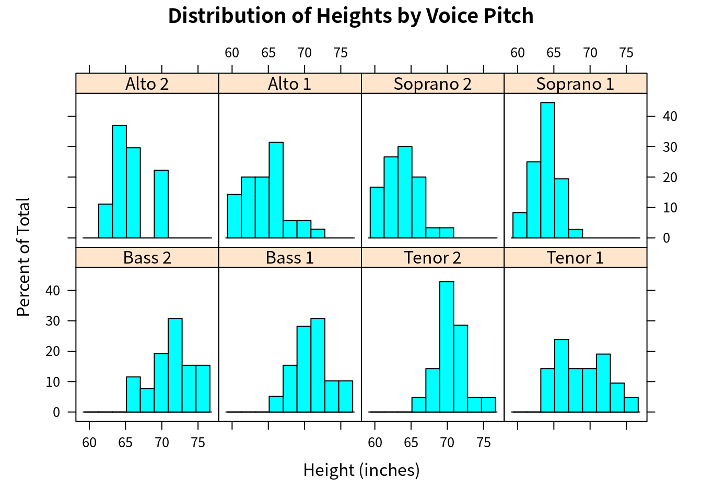
其中 voice.part 被称为 conditioning variable，而 height 为 dependent variable。
在 trellis 图中，conditioning variable 的每个 level 都会创建一个独立的 panel。如果有多个 conditioning variable，则 (factor) level 的每个组合都会有一个 panel。每个 panel 会有一个标签，被称之为 strip。用户可以控制
- 每个 panel 中的图象
- strip 的格式和位置
- panel 的排列方式
- 图例 legend 的位置及内容
- 其它图象特点
lattice 可以作出
- 单变量图
~x | A：dot plots, kernel density plots, histograms, bar charts, box plots - 双变量图
y~x | A：scatter plots, strip plots, parallel box plots - 多变量图
z~x*y | A：3D plots, scatter plot matrices
下面用 mtcars 数据集进行详细说明，
str(mtcars)## 'data.frame': 32 obs. of 11 variables:
## $ mpg : num 21 21 22.8 21.4 18.7 18.1 14.3 24.4 22.8 19.2 ...
## $ cyl : num 6 6 4 6 8 6 8 4 4 6 ...
## $ disp: num 160 160 108 258 360 ...
## $ hp : num 110 110 93 110 175 105 245 62 95 123 ...
## $ drat: num 3.9 3.9 3.85 3.08 3.15 2.76 3.21 3.69 3.92 3.92 ...
## $ wt : num 2.62 2.88 2.32 3.21 3.44 ...
## $ qsec: num 16.5 17 18.6 19.4 17 ...
## $ vs : num 0 0 1 1 0 1 0 1 1 1 ...
## $ am : num 1 1 1 0 0 0 0 0 0 0 ...
## $ gear: num 4 4 4 3 3 3 3 4 4 4 ...
## $ carb: num 4 4 1 1 2 1 4 2 2 4 ...attach(mtcars)gear = factor(gear, levels = c(3, 4, 5),
labels = c("3 gears", "4 gears", "5 gears"))
cyl = factor(cyl, levels = c(4, 6, 8),
labels = c("4 cylinders", "6 cylinders", "8 cylinders"))
densityplot(~mpg, main = "Density Plot", xlab = "Miles Per Gallon")
densityplot(~mpg | cyl, main = "Density Plot by Numbers of Cylinders", xlab = "Miles Per Gallon")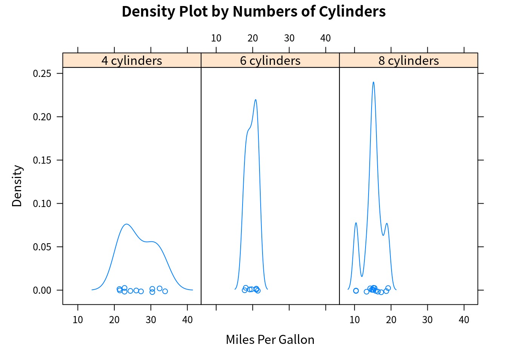
bwplot(cyl ~ mpg | gear, main = "Box Plots by Cylinders and Gears",
xlab = "Miles Per Gallon", ylab = "Cylinders")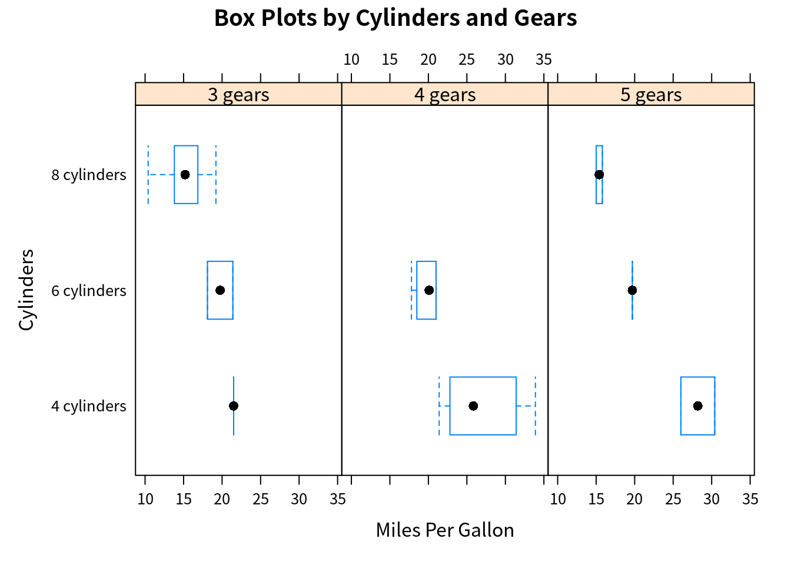
xyplot(mpg ~ wt | cyl * gear, main = "Scatter Plots by Cylinders and Gears",
xlab = "Car Weight", ylab = "Miles Per Gallon")
cloud(mpg ~ wt * qsec | cyl, main = "3D Scatter Plots by Cylinders")
dotplot(cyl ~ mpg | gear,
main = "Dot Plots by Number of Gears and Cylinders", # gear x cyl!!
xlab = "Miles Per Gallon")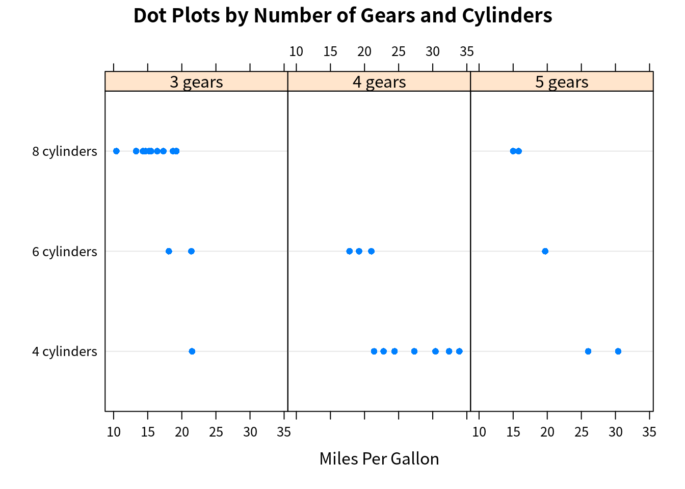
splom(mtcars[c(1, 3, 4, 5, 6)], main = "Scatter Plot Matrix for mtcars Data")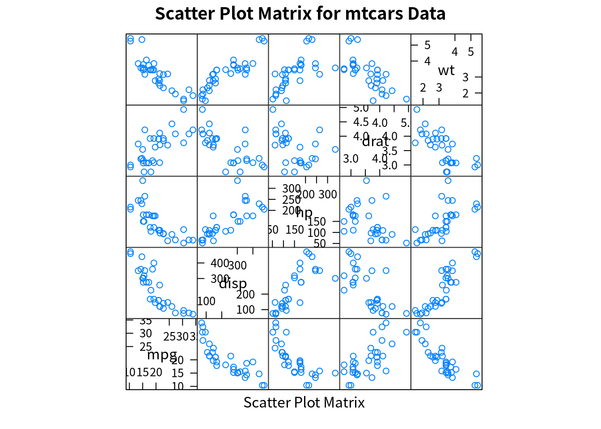
detach(mtcars)与基本作图系统不同的是，lattice 可以将图保存为一个变量，而且可以后续更改，
mygraph = densityplot(~height | voice.part, data = singer)
update(mygraph, col = "red", pch = 16, cex = 0.8, jitter = 0.05, lwd = 2)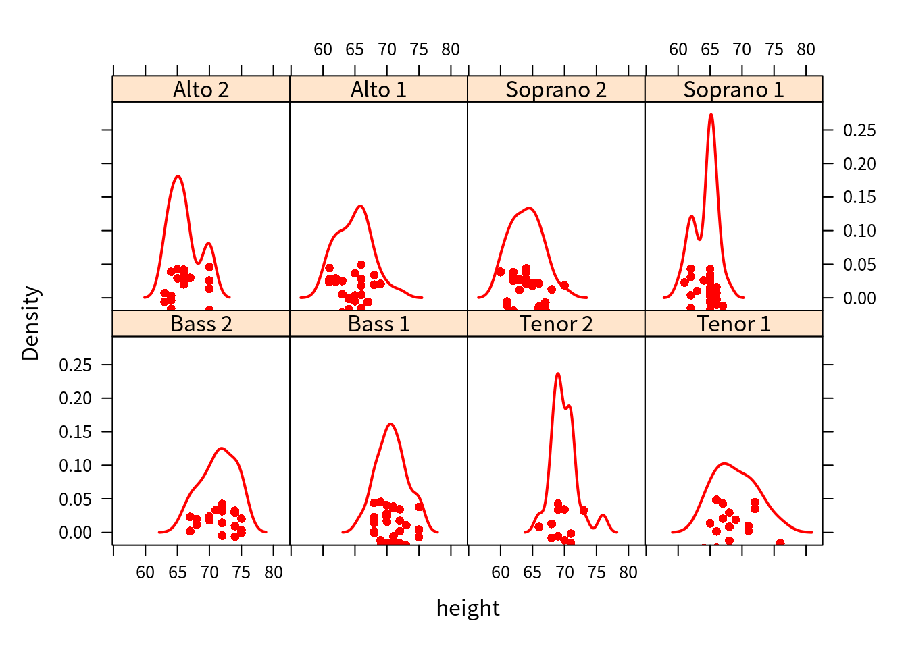
Conditioning Variables
一般地，conditioning variables 是 factors。对于连续变量，可以通过 cut() 函数将其转换为离散变量。不过 lattice 将连续变量转换成所谓的 shingle 结构。具体地，连续变量被划分成若干个（可能）重叠的区域。比如，
displacement = equal.count(mtcars$disp, number = 3, overlap = 0)会将连续变量 mtcars$disp 划分成 3 个区间，有 proportion=0 的重叠部分，每个区间观测值的个数相等，然后可以将其作为 conditioning variable 进行作图，
xyplot(mpg ~ wt | displacement, data = mtcars,
main = "Miles Per Gallon vs. Weight by Engine Displacement",
xlab = "Weight", ylab = "Miles Per Gallon",
layout = c(3, 1), # 3 columns
aspect = 1.5 # height / width
)
其中 strip 的深色部分则表示连续变量作为 conditioning variable 的取值范围。
注意 proportion 是相对于每个区间的比例，而非整个长度的比例，所以确定每个区间观测值个数的公式为
\[ \frac{N}{n(1-\text{overlap}) + \text{overlap}} \]
具体代码为
co.intervals## function (x, number = 6, overlap = 0.5)
## {
## x <- sort(x[!is.na(x)])
## n <- length(x)
## r <- n/(number * (1 - overlap) + overlap)
## ii <- 0:(number - 1) * (1 - overlap) * r
## x1 <- x[round(1 + ii)]
## xr <- x[round(r + ii)]
## keep <- c(TRUE, diff(x1) > 0 | diff(xr) > 0)
## j.gt.0 <- 0 < (jump <- diff(x))
## eps <- 0.5 * if (any(j.gt.0))
## min(jump[j.gt.0])
## else 0
## cbind(x1[keep] - eps, xr[keep] + eps)
## }
## <bytecode: 0x564f95b5a490>
## <environment: namespace:graphics>panel functions
对于每个 high-level 画图函数，graph_function，其默认的 panel 函数即为 panel.graph_function。比如 xyplot 的 panel 函数为 panel.xyplot。
我们可以定义自己的 panel 函数使得每个 panel 可以加入更多的东西，比如回归直线。
# custom panel function
mypanel = function(x, y) {
panel.xyplot(x, y, pch = 19)
panel.rug(x, y)
panel.grid(h = -1, v = -1) # use negative numbers forces the grid to line up with the axis labels
panel.lmline(x, y, col = "red", lwd = 1, lty = 2)
}
xyplot(mpg ~ wt | displacement, data = mtcars,
main = "Miles Per Gallon vs. Weight by Engine Displacement",
xlab = "Weight", ylab = "Miles Per Gallon",
layout = c(3, 1), # 3 columns
aspect = 1.5, # height / width
panel = mypanel
)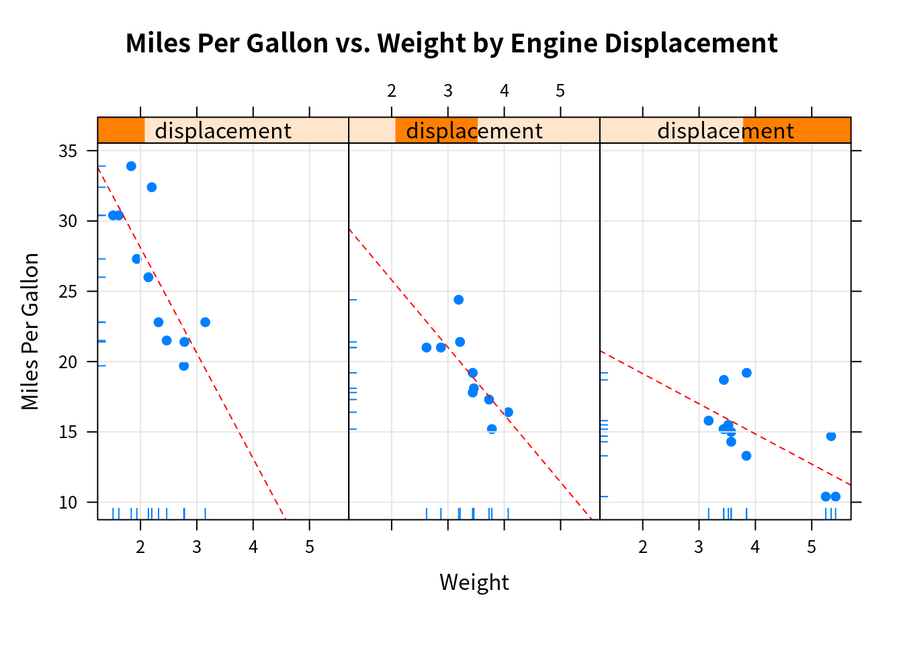
考虑另一个例子，
mtcars$transmission = factor(mtcars$am, levels = c(0, 1), labels = c("Automatic", "Manual"))
panel.smoother = function(x, y) {
panel.grid(h=-1, v=-1)
panel.xyplot(x, y)
panel.loess(x, y)
panel.abline(h = mean(y), lwd = 2, lty = 2, col = "green")
}
xyplot(mpg ~ disp | transmission, data = mtcars,
scales = list(cex = .8, col = "red"), # scale annotations, or separately list(x=list(), y=list())
panel = panel.smoother,
xlab = "Displacement",
ylab = "Miles per Gallon",
main = "MGP vs Displacement by Transmission Type",
sub = "Dotted lines are Group Means", aspect = 1)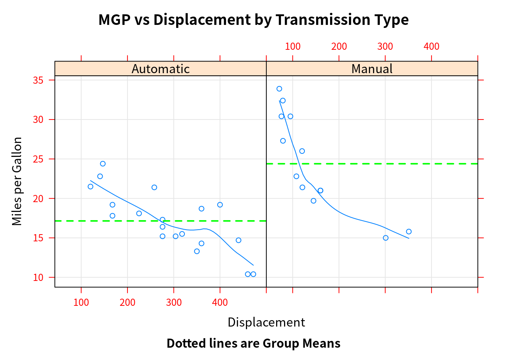
Grouping variables
如果不想分开展示数据，而是叠在一起，则可以用 group variable。
densityplot(~mpg, data = mtcars,
group = transmission,
main = "MPG Distribution by Transimission Type",
xlab = "Miles per Gallon",
auto.key = T,
#auto.key = list(space = "right", columns = 1, title = "Transmission")
)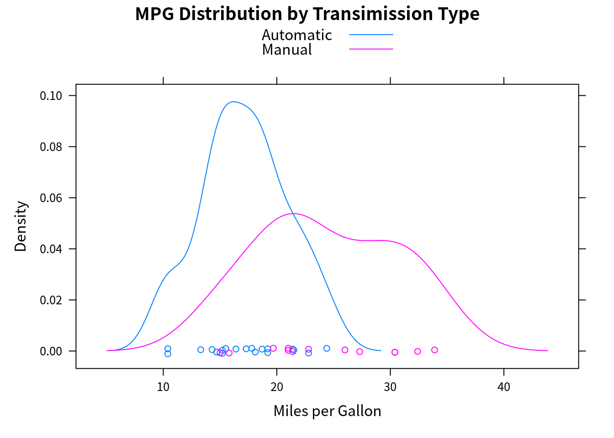
图例可以进一步自定义，
colors = c("red", "blue")
lines = c(1, 2)
points = c(16, 17)
key.trans = list(title = "Transmission",
space = "bottom", columns = 2,
text = list(levels(mtcars$transmission)),
points = list(pch = points, col = colors),
lines = list(col = colors, lty = lines),
cex.title = 1, cex = .9)
densityplot(~mpg, data = mtcars,
group = transmission,
main = "MPG Distribution by Transimission Type",
xlab = "Miles per Gallon",
pch = points, lty = lines, col = colors,
lwd = 2, jitter = 0.005,
key = key.trans
)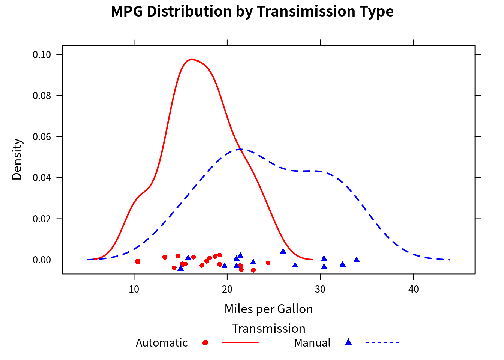
下面考虑同时使用 conditioning variable 和 grouping variable。数据集 CO2 描述了 12 种植物在 7 种二氧化碳含量的环境 conc 中对二氧化碳的吸收率 uptake，其中 6 种植物来自 Quebec，6 种来自 Mississippi，即 Type 变量，而每个地区各有三种在不同的 Treatment (chilled/nonchilled) 进行研究，
str(CO2)## Classes 'nfnGroupedData', 'nfGroupedData', 'groupedData' and 'data.frame': 84 obs. of 5 variables:
## $ Plant : Ord.factor w/ 12 levels "Qn1"<"Qn2"<"Qn3"<..: 1 1 1 1 1 1 1 2 2 2 ...
## $ Type : Factor w/ 2 levels "Quebec","Mississippi": 1 1 1 1 1 1 1 1 1 1 ...
## $ Treatment: Factor w/ 2 levels "nonchilled","chilled": 1 1 1 1 1 1 1 1 1 1 ...
## $ conc : num 95 175 250 350 500 675 1000 95 175 250 ...
## $ uptake : num 16 30.4 34.8 37.2 35.3 39.2 39.7 13.6 27.3 37.1 ...
## - attr(*, "formula")=Class 'formula' language uptake ~ conc | Plant
## .. ..- attr(*, ".Environment")=<environment: R_EmptyEnv>
## - attr(*, "outer")=Class 'formula' language ~Treatment * Type
## .. ..- attr(*, ".Environment")=<environment: R_EmptyEnv>
## - attr(*, "labels")=List of 2
## ..$ x: chr "Ambient carbon dioxide concentration"
## ..$ y: chr "CO2 uptake rate"
## - attr(*, "units")=List of 2
## ..$ x: chr "(uL/L)"
## ..$ y: chr "(umol/m^2 s)"colors = "darkgreen"
symbols = c(1:12)
linetype = c(1:3)
key.species = list(title = "Plant",
space = "right",
text = list(levels(CO2$Plant)),
points = list(pch = symbols, col = colors))
xyplot(uptake ~ conc | Type * Treatment, data = CO2,
group = Plant,
type = "o",
pch = symbols, col = colors, lty = linetype,
main = "Carbon Dioxide Uptake \nin Grass Plants",
ylab = expression(paste("Uptake ",
bgroup("(", italic(frac("umol", "m"^2)), ")"))), # bgroup?
xlab = expression(paste("Concentration ",
bgroup("(", italic(frac(mL, L)), ")"))),
sub = "Grass Species: Echinochloa crus-galli",
key = key.species)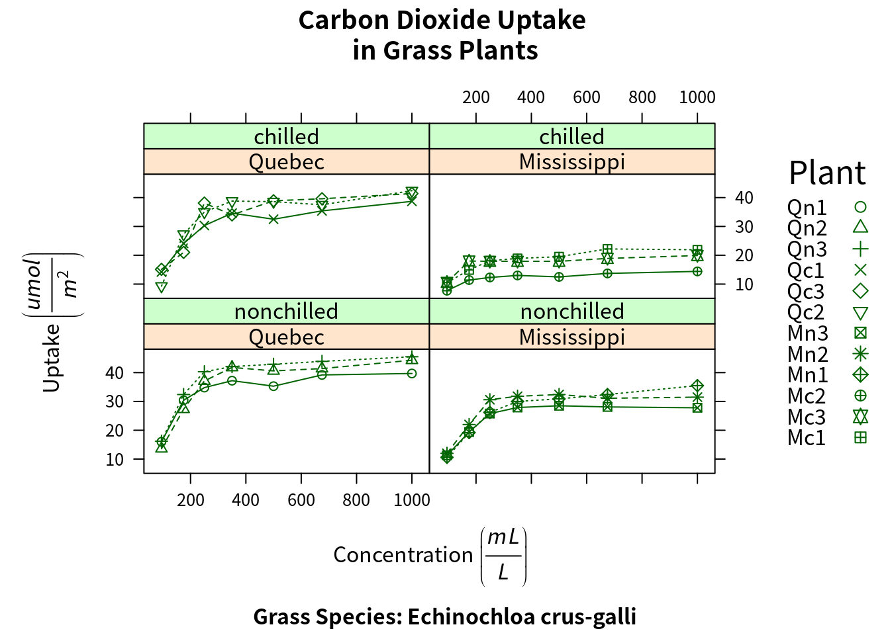
Graphic parameters
类似基本作图的 par()，lattice 也有类似的设置 graphic parameters 的命令，
show.settings()
mysettings = trellis.par.get()
mysettings$superpose.symbol## $alpha
## [1] 1 1 1 1 1 1 1
##
## $cex
## [1] 0.8 0.8 0.8 0.8 0.8 0.8 0.8
##
## $col
## [1] "#0080ff" "#ff00ff" "darkgreen" "#ff0000" "orange" "#00ff00"
## [7] "brown"
##
## $fill
## [1] "#CCFFFF" "#FFCCFF" "#CCFFCC" "#FFE5CC" "#CCE6FF" "#FFFFCC" "#FFCCCC"
##
## $font
## [1] 1 1 1 1 1 1 1
##
## $pch
## [1] 1 1 1 1 1 1 1默认时 pch 均为 1，将其改成对应的序号，
mysettings$superpose.symbol$pch = c(1:10)
trellis.par.set(mysettings)
show.settings()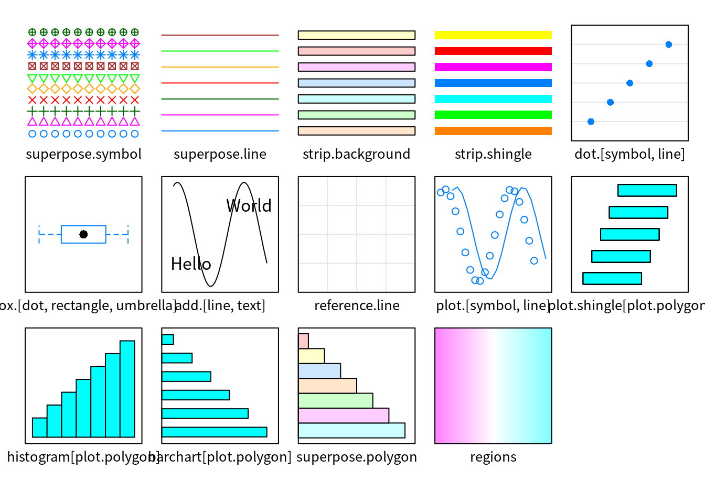
Page arrangement
同上，par 在 lattice 不起作用，也就无法设置 mfrow 或者 mfcol，但这可以通过 split 进行实现，
split = c(placement row, placement column, total number of rows, total number of columns)比如
graph1 = histogram(~height|voice.part, data = singer,
main = "Heights of Choral Singers by Voice Part")
graph2 = densityplot(~height, data = singer, group = voice.part,
plot.points = F, auto.key = list(columns = 4))
plot(graph1, split=c(1, 1, 1, 2))
plot(graph2, split=c(1, 2, 1, 2), newpage=FALSE)
另外也可以通过指定 position = c(xmin, ymin, xmax, ymax)，取值为 0 到 1 直接的比例数，原点在左下角，如
plot(graph1, position = c(0, 0.3, 1, 1))
plot(graph2, position = c(0, 0, 1, 0.3), newpage = FALSE)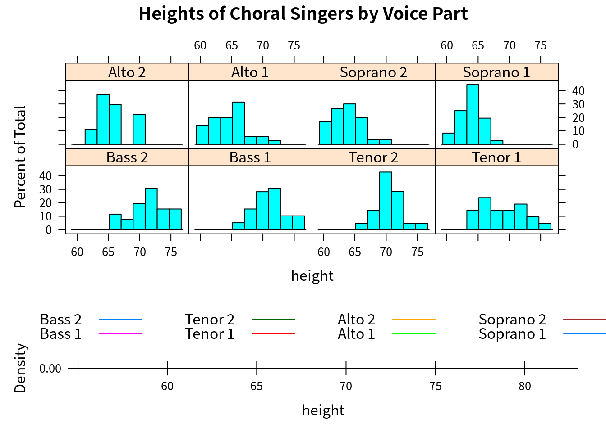
一幅 lattice 图中 panel 的顺序可以通过 index.cond = 进行指定，比如将“1”声部放在一行，而“2”声部放在另一行，
levels(singer$voice.part)## [1] "Bass 2" "Bass 1" "Tenor 2" "Tenor 1" "Alto 2" "Alto 1"
## [7] "Soprano 2" "Soprano 1"update(graph1, index.cond = list(c(2, 4, 6, 8, 1, 3, 5, 7)))
Reproduce Fig. 6.9
Tricks on including external R scripts: https://stackoverflow.com/questions/52397430/include-code-from-an-external-r-script-run-in-display-both-code-and-output, and also note that imgs and rmds are on the same folder level, so the read.csv() with relative path works well.
data = read.csv("../data/Ozone/ozone.csv", sep = "\t")
# calculate the overlap 4*0.4-3x=1 => x = 0.2
# the overlap in w.r.t. each interval instead of the whole interval
# prop = 0.2 / 0.4 = 0.5
Wind = equal.count(data$wind, number = 4, overlap = 0.5)
Temp = equal.count(data$temp, number = 4, overlap = 0.5)
mypanel = function(x, y) {
panel.xyplot(x, y)
panel.grid()
panel.loess(x, y)
}
xyplot(I(ozone^(1/3)) ~ radiation | Temp * Wind, data = data,
panel = mypanel,
xlab = "Solar Radiation (langleys)",
ylab = "Cube Root Ozone (cube root ppb)")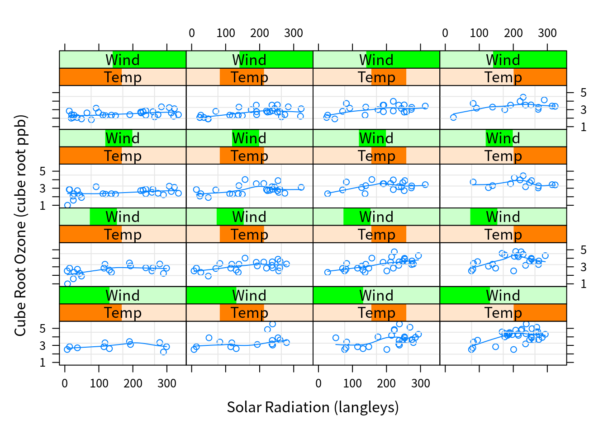
coplot(I(ozone^(1/3)) ~ radiation | temperature * wind, data = data,
number = 4, overlap = 0.5)
Copyright © 2016-2021 weiya